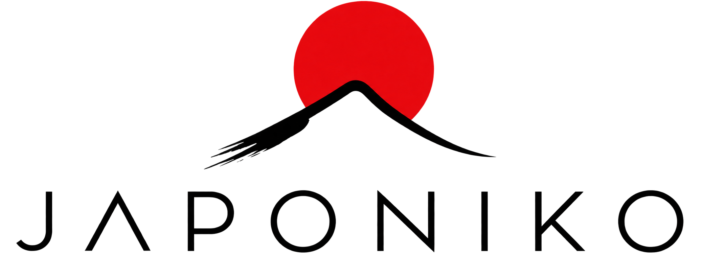

Nos cuentas tu viaje
Fechas, personas, presupuesto, lugares que te interesan y la forma en que quieres viajar.

ContactoEmpezar mi viajeCÓMO FUNCIONA
Japoniko te ayuda a tomar las decisiones importantes y a convertir tus ideas en un plan claro. Tú eliges y reservas; nosotros te orientamos.
Fechas, personas, presupuesto, lugares que te interesan y la forma en que quieres viajar.
Analizamos la ruta, el ritmo, el transporte y las decisiones que marcarán la experiencia.
Recibes una propuesta personalizada, con recomendaciones y enlaces para consultar y reservar.
Durante 30 días puedes preguntar, revisar y adaptar el plan antes de hacer las reservas.
Tú decides cada reserva, con toda la información necesaria para hacerlo con seguridad.
79 € por viaje · 30 días de acompañamiento